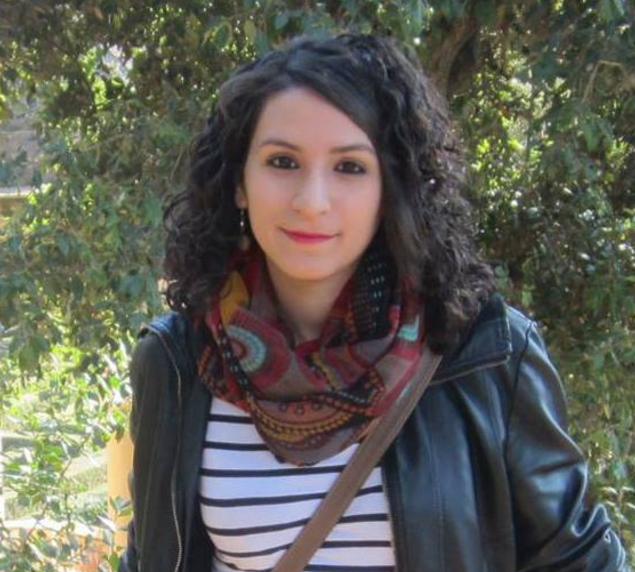

Marta Broto
Marta Broto holds a MSc degree in Organic Chemistry from the University of Barcelona and is currently finishing her PhD at IQAC-CSIC. Her research focuses on the development of multiplexed and multimodal diagnostic platforms based on specifically functionalized particles.
During her pre-doctoral training period, she spent a 4-month internship in the Chemical Engineering department of University of California Santa Barbara focusing on drug delivery particles. She has experience in science communication as a member of Scientists Dating Forum and cofounder of Branchis.
Marta Broto tiene un máster en Química Orgánica de la Universidad de Barcelona y, actualmente, está terminando su tesis doctoral en el IQAC-CSIC. Su investigación se centra en el desarrollo de plataformas de diagnóstico multiplexadas y multimodales basados en partículas con funcionalizaciones específicas.
Durante su etapa predoctoral, hizo una estancia de 4 meses en el departamento de Ingeniería Química de la Universidad de California Santa Bárbara, centrándose en partículas para la liberación de fármacos. Sra. Broto tienen experiencia en comunicación científica como miembro del Scientists Dating Forum y cofundadora de Branchis.
Ana Sanchis
 Ana Sanchis holds a degree in Biotechnology from the Autonomous University of Barcelona, with a MSc degree in Advanced Immunology from the University of Barcelona. She is currently finishing her PhD at IQAC-CSIC, focusing her research on the development of multiplexed platforms for the detection of environmental pollutants, as well as the exploration of new assay surfaces such as nanoparticles and flexible polymers.
During her pre-doctoral training period, she became interested in the world of business and entrepreneurship, and today she has experience in scientific communication as a member of Scientists Dating Forum and cofounder of Branchis.
Ana Sanchis es licenciada en Biotecnología por la Universidad Autónoma de Barcelona, con un máster en Inmunología avanzada por la Universidad de Barcelona. Actualmente está finalizando su tesis doctoral en el IQAC-CSIC, centrando su investigación en el desarrollo de plataformas multiplexadas de detección de contaminantes medioambientales, así como en la exploración de nuevas superficies de ensayo como lo son nanopartículas y polímeros flexibles.
Durante su etapa predoctoral, despertó su interés en el mundo de la empresa y el emprendimiento, y a día de hoy cuenta con experiencia en comunicación científica como miembro del Scientists Dating Forum y cofundadora de Branchis.